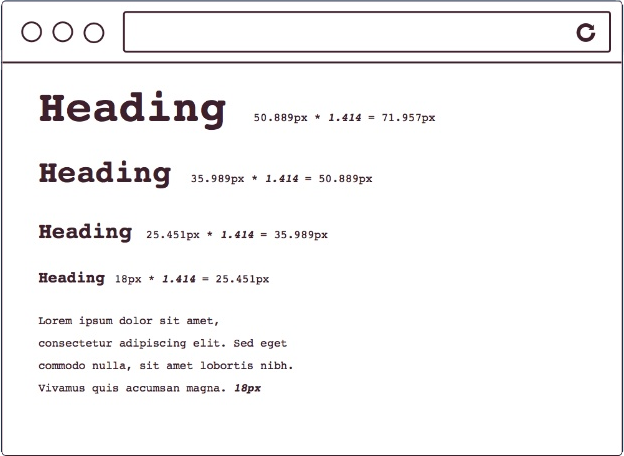
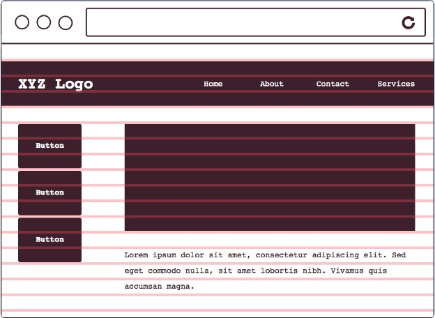
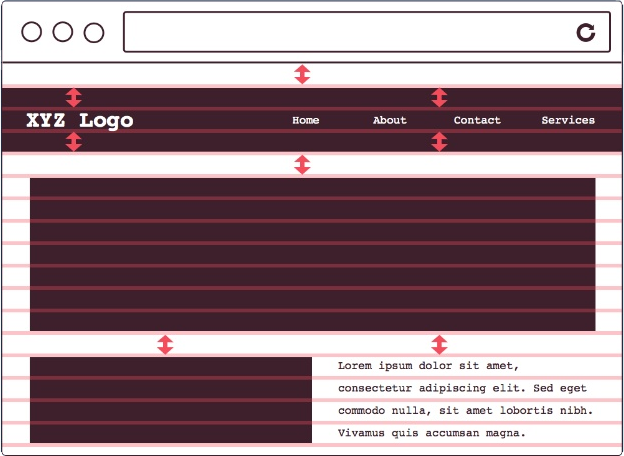

1. Text
line-height: 1.5em, font-size: 16px, font-weight: 500
HERFER LINK TEXT텍스트 더미
텍스트 더미line-height: 1.5em, font-size: 16px, font-weight: 500
HERFER LINK TEXT텍스트 더미
텍스트 더미버전관리도구 github.com에 가입
디자이너, 개발자, 콘텐츠 개발자 간의 소통을 위한 도구로서 글자 사이의 간격, 행 사이의 간격, 많이 쓰는 색상 값 등을 한데 묶어 전체적인 디자인 설계를 보여주는 것이다.

h1 ~ h6 까지 총 6단계의 제목 사용
의미는 가지지 않으나, 여러 요소를 블록(Block)으로 묶을 때 사용
OS(운영체제) 별로 보여지는 폰트는 제각기다, 그 예로 다음의 사진을 보겠다.
다음과 같은 차이가 나는 이유는 OS별로 지원하는 기본 폰트 (System default font)가 다르기 때문이다.
따라서 OS에 관계 없이 똑같이 보여지게 하려면, 시스템의 폰트를 참조하는 것이 아닌 만들어서 웹상에 뿌려진 형태의 웹 폰트를 써야한다. 웹 폰트는 Css, 직접 ttf 파일을 내려받아 사용하는 2가지의 방식이 있다.
일정한 배율이 반영된 수의 나열
행(ROW) 사이 간격으로 글자 크기(Font Size)를 포함한 높이
각 요소(Element) 간의 수직적인 공간 배열 관계
요소에 height와 width를 줬을 시 content 영역만 별개로 늘어난다.
하지만 box-sizing: border-box 를 줬을 시 border까지의 영역을 content로 잡아주기 때문에 보다 쉽고 유용하게 마크업이 가능하다.
div 와 같은 block 태그들은 기본 width 값이 100% 이기 때문에 수직 방향으로 떨어진다.
이러한 block 태그들을 수평방향으로 배치하기 위해 float 라는 기술을 쓴다.
li에 list-style: none을 준뒤
ul을 padding-left으로 밀어서
다시 li에 list-style-image: url(""), list-style-positon: x y 로 조정
결과 페이지 : list-design
위 공식을 이용해서 .push-1 과 같은 모듈을 만들어내고,
전체적인 row를 미는것은 해당 row에다 position: relative 를 준다음 밀어냄 .prefix 모듈
해당 요소의 부모의 position이 있는 곳을 기준으로 잡고 다른 엘리먼트에 영향을 미치지 않고 이동할수 있게된다.
자식에게 position을 줬을떄 사용되며, 원래 자신이 위치하고 있었던 곳을 기준으로 다른 엘리먼트에 영향을 미치지 않고 이동가능
본래 우리나라에선 팝업창이라 부르는 홈페이지와 개별적으로 띄어지는 창은
본래 bim-window 라는 정식 명칭이 있었다.
position: fixed 라는 포지셔닝은 이름 그대로 해당 영역에 고정 시킨다. (스크롤해도 위치가 그대로임)
위 position: fixed 와 Day11에 배웠던 내용을 이용해 브라우져 정 가운데 위치한 개별적인 창을 고정(fixed) 시켜 보겠다.
스마트폰이 만들어졌다, 무려 인터넷도 된다. 자연스럽게 웹의 영역은 모바일 까지 확장 되었고 모바일에서도 데스크탑과 마찬가지로 똑같은 화면을 보여줄수 없기 때문에, 웹은 모바일 까지 지원하는게 필수가 되었다.
하지만 불행하게도 모바일마다 배율(픽셀 밀도) 가 다르다.
이 말은 Galaxy에서 잘 보이던 이미지가 iphone에서는 깨져보일수도 있다는 뜻이다.
앞서 말하지만 픽셀은 상대적이다.
위 사진으로 예를 들어, 검은색 사각형 하나를 절대적인 값의 1px이라고 한다면
1배율에서 1px => 2배율에서 2px이 된다.
쉽게 설명하자면 1배율에서 2칸에 들어갈 픽셀이 2배율에선 1칸에 들어간다는 것이다.
고로 1배율에서 잘보이던 사진이 2배율에서 깨져보이는 이유는 상대적으로 크기는 똑같아 보이지만 2배율에서의 사진은 1배율에서의 사진을 2배 늘린것이기 때문이다.
이미지를 원래 크기보다 늘리면 당연히 깨진다... 하지만 역설적으로 원래 큰 이미지를 줄이면은 그 해상도는 그대로 유지하며 거의 안깨지게 할수 있다.
즉 고해상도 까지 이미지를 깨지지 않게 지원하려면 그냥 말 그대로 처음부터 크게 제작하면 된다.
만약 여러분의 회사가 모바일 기기를 3배율 까지 지원한다고 하고, 여러분이 만들 이미지 사이즈가 ( 500 x 200 ) 이라면 여러분은 그냥 원래 사이즈의 3배 즉 ( 1500 x 600 ) 사이즈의 이미지를 만들기만 하면 된다. 각각 비율에 맞는 사이즈는 퍼블리셔들이 알아서 줄여줄 것이다. ( 주의할 점 : Smart Object 로 만들어야 줄였을때의 깨짐현상을 최소화 시킬수 있다. )
위 이미지를 포토샵에서 줄인다음 빼내서 각각의 배율마다 해당 이미지를 처리해야 하는데
다행히도 이를위해 html5에서는 새로운 태그가 있다. 바로 src set이다.
코드 작성도 매위 손쉽다 기존의 img 태그 뒤에서 srcset="" 만 붙여주면 된다.
slider 같은 경우, 보여지는 부분인 wrap 엘리먼트를 만든 뒤,
보여지는 박스 부분이 움직이도록 실질적으로 해당 엘리먼트들을 감싸는 박스 만듦
첫부분 col의 왼쪽, 마지막 col의 오른쪽, 총 2개의 gutter를 뺸 값으로 계산
( 이렇게 하면 gradient로 만들기 편함 )
평소엔 container에 고정 width 값을 줬다가
container에 flud 등의 class 값을 추가로 줬을 시 px로 고정시킨 width 값을 100%로 바꿔준다.
데스크탑의 폭과 모바일의 폭은 당연히 다를수밖에 없다.
혹은 데스크탑의 그 큰 사이즈를 모바일에서 본다면 글시조차도 제대로 못볼 것이다.
모바일에서의 폭(가로)을 가져와서 그 사이즈에 맞도록 보여질수 있도록 하는 코드가 바로 viewport며 사용법은 다음과 같다.
viewport를 브라우져의 폭(가로)을 그에맞게 보여질수 있도록 최적화 시켰으니 다음은 device마다 다른 화면을 보여줄 차례다.
위 사진과 같이 보여지게 하려면 media 쿼리가 필요하며, 미디어 쿼리 사용법은 다음과 같다.
그리스 시스템은 기본적으로 column을 정하고 시작한다.
( 데스크탑은 12column, 테블릿은 8column, 모바일은 4column 으로 적용시키는 것이 기본이다.)
저에게 있었던 문제점을 토대삼아 앞으로의 제가 나아갈 방향을 크게 4가지로 잡아보았으며,
학원에서 수업을 들을 때 전 위의 4가지 방향성에 유의하며 수업을 들었습니다.
초창기때 제가만든 웹페이지를 보면 거의 모든 태그들을 다 div로 감싸고, list로 나타내지 않아도 되는 부분을 list로 나타낸 경우가 허다했습니다.
그럼에도 시각상으로 보여지는 부분에는 문제가 없기에 그렇게 마크업을 작성하는 경우가 많았는데 1년전, 비교적 최근에서야 HTML에도 컨턴츠의 내용,의미에 따라 종류를 나눈 태그가 있다는 것을 알았습니다.
위 사진은 각각의 내용에 따라 그 의미를 나눈 시맨틱 태그를 한눈에 보여주는 사진입니다.
이와같이 그 의미에 맞게 태그를 쓰면 기계적인 검색 엔진은 어떠한 태그가 어떠한 기능을 하는지 분별할 수 있어 웹페이지에서 데이터를 효율적으로 추출할수 있습니다. 또한 나이가 시각 등이 불편한 장애인들에게도 보다 효율적으로 컨텐츠를 제공할수 있게 됩니다.
이러한 시맨틱 태그의 존재를 알아내고 나서, 전 의미있는 태그 사용을 위해 div의 무조건 적인 사용성을 줄이고 list요소와 제목 요소 등을 분리해 보기 시작했습니다.
그 결과, div의 사용을 줄이니 구조가 훨신 간결해 지고 그만큼 효율적인 마크업을 할수 있었습니다.
제가 여태껏 홈페이지를 만들면서 든 생각은 '만드는것 보다 유지관리가 더 어렵다' 였습니다.
그리고 제가 그렇게 밖에 느낄수 없었던 이유는 다름아닌 class의 무리한 재사용, 모호한 class 이름 때문이었습니다.
예를들어 div를 정가운데 배치시키는 class를 만들어서 준다고 치면 이전에는 다음과 같은 center라는 class명을 줬었습니다.
하지만 이와같은 class명은 해당 element가 가운데로 오는건지, 아니면 element안의 글시가 가운데로 오는건지 알수 없습니다. 따라서 최근에는 의미적인 class이름을 사용하기 위해 다음과 같이 이름을 짓기 시작했습니다.
한눈에 보기에도 무슨 역할을 하는 class명인지 알아볼수 있고, 만약 이 div를 가운데 배치 시키지 않을경우 해당되는 class만 지우면 되기 때문에 유지보수 또한 쉬워졌습니다.
학원에서 class모듈을 배우기 전, 제가 만드는 class의 단계는 이러했습니다.
이런식으로 class를 그때그때 필요한 기능으로 추가했었습니다.
물론 관리가 필요없는 휘발성 페이지는 이런식의 class추가가 더 깔끔하고 좋을수도 있지만 그렇지 않을경우 유지관리를 위해 기능의 모듈화가 필요하다고 느꼈고,
학원에서 공통되거나, 반드시 일어날 경우를 생각한뒤 class모듈을 만든 수업을 참고삼아 저도 그와같은 모듈화를 통해 빠른 기능추가를 도모했습니다.
예를들어, 모바일에서 화면이 일정 크기 이하에서 사라져야 하는 div가 있다면
이런식으로 미리 class를 만든 다음 해당 모듈을 적용시키면 해당하는 기능이 추가되니, 기능의 키고 끔이 매우 편리해졌습니다.
즉 의미론적인 class사용이 아닌 기능적인 class사용을 알아갈수 있었습니다.
gulp는, Node를 이용한 생산성 향상 시스템입니다.
다른 사람들이 만들어 놓은 다양한 Plugin을 통해 import로 불러온 css를 하나로 병합하거나, Test 서버를 띄워 결과물을 확인하는 등의 작업을 task에 등록해 명령어 하나로 자동화 할수 있습니다.
페이지에서 만약 동일하게 사용되는 css의 경로를 수정해야 하는 경우가 생길 때 gulp를 사용하기 전에는 해당 link를 하나하나 수정해야 했었습니다.
이 경우 페이지 한두개는 문제가 없을테지만 만약 70~80페이지 정도가 된다면 그것은 그것대로 중노동이 되는 경우가 허다했습니다.
html include 같은 경우에는 공통적으로 사용하는 코드를 php나 css에서 include 하듯 가져올수 있습니다.
이런 식으로 css를 가져오는 코드를 가진 html을 저장한 뒤, 해당 css를 불러올 파일에서 다음과 같이 써주면 됩니다.
공통으로 들어가는 코드는 하나의 파일로 참조하니, 공통으로 들어갈 코드를 전부 변경할 경우 참조한 파일 하나만 수정하면 손쉽게 변경이 가능합니다.
아무리 작은 용량의 파일이라도 수천, 수만번의 다운을 받으면 그것은 무시할수 없는 수준의 용량을 차지할 것입니다.
이러한 관점으로, 실 서버에 배포하는 과정에 있어서 용량을 줄이는 테크닉은 필요불가결 합니다.
gulp에는 이러한 용량 테크닉관련 Plugin도 수없이 많습니다.
gulp는 정말 똑똑합니다. 플러그인을 연결해서 task에 등록하고 명령어 조금만 쳐주면 위와 같이 여러 파일을 합쳐서 압축하거나, image 파일 용량을 줄이는 등의 고난이도 작업또한 손쉽게 할수 있습니다.
이뿐만이 아닙니다. gulp에는 다양한 모듈들이 즐비하기 때문에 여러 모듈을 병합해 새로운 모듈을 만들거나, 이전에 했던 수동적인 작업들을 전부 자동화 시켜버릴수도 있습니다.
Class모듈, HTML모듈, 이 두개를 완성했으니 이젠 CSS모듈을 완성할 차례 입니다.
사실 위 3가지중 가장 중요한 것이 CSS모듈입니다. Class모듈은 CSS모듈이 완성되야 비로소 그 빛을 발휘할수 있는 것이고, HTML 모듈은 지속적인 유지관리를 위한 모듈 그 이상과 이하도 아닙니다.
여지껏 CSS를 사용하며, 자주 사용하는 style, 색상값 등을 묶어서 변수로 사용 하고 싶다는 생각을 매번 해왔고, 그런 저에게 SASS는 gulp 이상의, 혁명적인 언어였습니다.
그 예로 main 안에있는 div.container 태그의 span 에다가 color : red를 적용시켜 보겠습니다.
기존의 css에선, 이와같이 하나하나의 띔 간격으로 그 안에있다는 구조적인 표현을 합니다. 반대로 sass는 TAB을 통해 구조를 만들기 때문에 구조파악이 훨신 쉽고, 직관적입니다.
여기에 한술 더 떠서 main 안에있는 div.contaienr 의 ul 에다가 color: blue 를 적용시켜 보겠습니다.
기존의 css라면, main div.container를 다시 타이핑 하거나 그 위치로 이동해 복사/불여넣기 하는 수 밖에 없어서 중복적인 타이핑과 이동이 발생합니다. 무엇보다 위에서 설명했듯이 그 구조적인 파악이 어렵습니다.
반면에 sass는 Tab을 통해 구조를 만들기에 훨신 직관적이고, 무엇보다 중복된 네임 타이핑을 최대한으로 줄여주기 때문에 코드의 작성속도가 훨신 높아짐니다.
홈페이지 마다 비교적 많이 쓰는 색이 있습니다. 예를 들어 네이버라면 이 색깔을 다음 이라면 이 색깔을 많이 사용합니다. 이러한 비교적 많이 사용하는 색깔을 한데 묶어서 변수에 담아 언제든지 사용할수 있게 하는 기능에 sass엔 있습니다.
color등의 값 뿐만이 아닌, style그 자체도 저장할수 있는데, 이걸 mix-in 이라고 합니다.
position을 통한 가운데 배치, width의 상대값화 등을 할때, 반드시 연산과정이 필요하고, 지금까지 수동으로 해왔습니다.
이 역시 sass가 연산도 제공하기 때문에 그럴 필요가 없어졌습니다. 더욱 놀라운 것은 sass는 함수마저 제공하기 때문에 이전까지 script로 해왔던 작업을 sass만으로도 해올수 있게 되었습니다.
이로인해서, gird-system, 반응형 웹 등을 작업할 시 계산하느라 시간쓸 필요가 없어졌고 함수는 그 특성상 모듈화했다가 언제든 꺼내쓸수 있기 때문에 쓰는만큼 더 빠른 업무수행의 효율성을 가져올수 있습니다.
스마트폰이 등장했습니다. 이젠 컴퓨터보다도 훨신 사용량이 많은게 스마트폰인데 컴퓨터의 화면을 모바일에서 그대로 보여줄순 없었고 당연하게도 반응형 웹 기술은 매우 중요해졌습니다.
물론, 반응형 웹은 절대 쉽지 않았고 지금도 버벅거리는게 반응형 웹입니다.
하지만 학원에서 배운 새로운 단위인 rem, 그리고 제 안에서의 수치값 재 정의로 인해 훨신 정교하고 유지보수적인 반응형 웹을 만들수 있게 되었습니다.
무수히 많은 모바일의 모든 기기를 하나하나 전부 최적화 되게 보여주기란 불가능 하고 이 한계적인 기기 최적화 내에서 가능한 많은 사용자들에게 그 편의를 제공해줘야하기 때문에 우리는 주 사용자 층을 분석한뒤 그에따른 중단점 설계를 해야 합니다.
EX) 모바일 주 사용자 층 디바이스 : iphone6 => 750px ~ 850px
rem 이란 Root em의 약자로 root의 font값, 즉 html의 font-size값에 따라 그 값의 정도가 정해지는 수치입니다.
이 값이 있으면, 반응형 웹을 만들기 훨신 수월합니다.
기존의 크기가 1000px인 엘리먼트가, 화면창 500px에서 200px로 바뀌어야 한다면, 기존에는 해당 엘리먼트를 수정해서 옮겼습니다. 그리고 이것은 코드의 길이가 터무니 없이 길어지며 만약, 화면 너비의 기준점을 바꿨을 경우, 그 관련된 엘리먼트들을 하나하나 다 수작업 헤서 바꾸는 등 정말 힘든 일이 됬었습니다.
하지만, rem은 html의 font-size를 기준으로 하기 떄문에 하나의 공통된 수치 하에서 해당 요소들이 기준을 맞추는 것이니, 그 공통된 수치를 바꿔만 줘도 손쉽게 화면 너비에 따라 의도한 대로 반응할수 있게 할수 있습니다.
반응형 웹은 말 그대로 화면의 너비에 따라 최적화되서 보여줄수 있게 반응하는 웹을 말합니다.
즉 화면에 너비에 따라, 각각에 해당하는 엘리먼트들이 그에 맞게 최적화 되서 늘어지거나 줄여져야 합니다. 이것은 위에나온 rem 단위로 쉽게 해결할수 있게 되었지만 구조적인 측면에서는 여전히 어려웠습니다.
다음은 반응형 layout예제입니다.
Desktop에선 보이던 역'ㄷ'형태의 layout이 태블릿, 모바일에서는 보이지 않으며 일자수평으로 늘어져있던 첫행의 layout은 타블렛에선 2/1+1로 모바일에서는 각각 1줄씩 차지하는 걸로 바뀝니다.
이 역시 각각의 기준점 마다 그 layout을 개별적으로 제어하는 방법으로 그 모습을 다르게 처리하도록 했으며, 코드 해석의 어려움과 중구난방한 layout class 이름을 가져왔습니다.
반면, 위와같이 클래스를 미리 만든 뒤, 적용하면 데스크탑에선 가로의 폭이 1/3이되고, 타블렛에서는 1/2 or 1 이 되는 layout을 단지 class의 추가만으로도 손쉽게 만들수 있습니다.
무엇보다 클래스의 이름으로 해당 엘리먼트를 제어하니 보기에도 편하고, 더더욱 레이아웃 이해도가 높아지며, 혹여나 후에 layout 구조가 바뀌어도 보다 유연하게 대처할수 있게 됩니다.
1 = content
2 = content + padding
3 = content + padding + margin
margin은 해당 엘리먼트의 크기를 키우는 것이 아닌 말 그대로의 여백공간을 주는 것이므로, 엘리먼트의 크기에 영향을 미치지 않습니다.
또한 box-sizing: border-box을 쓸 경우 content의 영역이 border까지 확장되므로, height: 40px, box-sizing: border-box를 준다면 padding or border를 줘도 높이는 40px이 됩니다.
포토샵과 마찬가지로 브라우져는 pixel단위로 그 화면을 처리합니다 그렇기 떄문에 소수점단위를 처리하는 경우 올림처리, 내림처리 등을 하는데 이것은 처리하는 방식은 브라우져 마다 다릅니다.
여기서 주의할 점은 2배수까지 작업할때 입니다.
솔직히 처음부터 값을 소수점으로 잡는 사람은 많지 않을 것이지만 2배수로 작업했다는건 실제 페이지가 나갈때 1/2로 줄여서 나간다는걸 아셔야 할것입니다. 즉, 2배수로 작업할 경우 홀수가 나오면 브라우져에서 의도했던 바와 다르게 나올수 밖에 없게 됩니다.
한줄 text를 수직방향 가운데로 오게끔 처리해주는 line-height 라는 styling이 있습니다.
EX) line-height: 40px 을 주면 높이값을 양분해서 text가 가운데로 옴
하지만 os, 브라우져 간의 그 처리방식이 다르기 때문인지 알수없는 오류 하나가 발생합니다.
위 사진은 naver의 한 페이지에서 동일선상에 있는 li태그안에 개발자 도구로 line-height: 12px를 준다음,
그것을 왼쪽에서부터 Window ie, OSX chrome 에서 본 사진입니다. 보시는 바와 같이 OSX에서의 Text가 위로 치우쳐져 있는것이 보이실 겁니다.
불행히도 이것은 OSX 와 Window만의 문제가 아닙니다. 실제로 작업을 하는경우 이미지 하나를 background로 넣고 background-position: center center 로 정 가운데로 오게 작업한 결과물이 하나 있었는데, 노트4에서 margin값까지 높이로 인식해 버리는 바람에 이미지가 아래로 치우쳐보이는 경우도 있었습니다.
이와같이 브라우져, OS, 각종 디바이스 마다 그 처리방식이 다르기 때문에 모두 똑같이 보이게 하는것은 불가능 합니다.
따라서, 홈페이지를 만들기 전 기준이 되는 디바이스나 브라우져 혹은 os를 선택하는 것이 중요합니다.
그리고 마크업을 진행하기에 앞서 다른 처리방식을 어느정도 맞출수 있도록 reset.css 를 적용시키는것 또한 매우 중요합니다.
이 페이지는 웹폰트, 브라우져마다 다른 처리 방식 을 다루기 때문에
day3, 다른 처리을 보고 오시면 더욱 이해가 잘되실 겁니다.
font를 옮길때, 퍼블리셔들은 다음을 고려합니다.
1. 디바이스, OS에 따라 달리보이는 font는 웹 폰트로 손쉽게 해결할수 있지만
2. line-height, font 와 object 사이의 간격은 그 간격을 잡아내기가 매우 어렵습니다. 다음 예제를 그 예로 들자면...
위와같이 제목 폰트와 text폰트의 간격을 잡을경우 일단 두 font 사이의 간격을 구합니다. (12px) 개리라는 Text의 font 크기가 : 35px 이므로 line-height => 32*1.5 : 48에서 font-height 즉 content-box의 높이를 구한뒤 48에서 뺀 후 양분을 해줍니다. 그렇게 나온 값을 12px에서 뺀 후, 다시 개리 의 값을 구한것과 같이 더미 텍스트 의 값을 구한 후, 12에서 개리값 뺀 값에서 다시 빼준 후 나온 값을 margin-top or padding-top으로 밀어주면 됩니다.
하지만 이럴 경우 앞서 말했듯이 os, 디바이스, 브라우져에 따라 다음과 같은 현상이 발생합니다.
위와 같이 디바이스, OS, 브라우져 마다 그 처리방식이 다르기 때문에 위로 치우치는 현상을 최소화 하려면 다음과 같은 방법을 써야 합니다.
위와 같은 방법을 다시 쓰면 두 font 사이의 간격을 구한 것에서 또 다시 각각의 font 마다 그 계산을 해 적용시켜야 합니다.
심지어 각각의 font마다 계산할 경우 위로 치우치는 것을 감안해 content-box, 즉 line-height가 아닌 height에 +2px 정도의 오차범위를 감안해서 그 값을 주니 어떤경우엔 양분했을 경우 소수가 나올때도 있고 또 어떤 경우엔 font사이의 간격을 잡는데 하루종일 소요되기도 합니다.
이런 문제점을 해결하기 위해서 vertical-rhythm을 사용해 보는것을 제안하는 바입니다.
vertical-rhythm은 다음과 같이 일정한 간격으로 나타낸 선을 말합니다.
위와같이 일정한 선에 맞춘 object를 통해 저희는 애매 모호하게 content-box에 오차범위를 둔다음 구하는 계산도, 양분한 값을 위 아래로 집어넣는 과정도 전부 필요하지 않게 됩니다.
무엇보다 이전과 달리 계산하는 과정 없이 일정하게 그어진 선을 기준으로 그 사이의 간격을 재니 오차범위가 발생할 일도 없고 디자인 시안의 화면과 매우 비슷한 결과물을 작업할수 있습니다.
왼쪽이 포토샵에서의 결과물이고 오른쪽이 웹상에서의 결과물 입니다.
- 다음에 나오는 colum-grid는 알고만 가셔도 무방합니다 -
vertical-rhythm이 세로 방향의 일정함을 나타내는 것이라면 column은 가로 방향의 일정함을 나타내는 것입니다.
여기서 가로 방향의 일정함이란 object와 object의 사이를 나타내는 것입니다.
( 위 사진과 같이 object와 object 사이를 gutter라고 하며, gutter는 있어도 되고 없어도 됩니다. )
포토샵에서 column-grid 만들기
photoshop에선 이것은 아예 tool이 따로 있습니다. ( cc 6 이상 )
column에 색을입혀 시각적으로 잘보이게 하기

vertical-rhythm과 column-grid를 합친것 그것이 바로 grid system 이며,
gird system을 사용함으로서 저희는 더욱 디자인 시안과 가까운 페이지를 만들수 있게 됩니다.
물론 앞서 설명했듯이 OS, 디바이스, 브라우져 마다 처리방식의 차이가 있기 때문에 모든 브라우져에서 완벽하게 똑같은 페이지를 보여줄수는 없지만 grid-system을 사용함으로서 보다 손쉽게 그 차이를 대폭으로 최소화 시킬수 있게 됩니다.